| week | day | climb | previous years | comment | |||
|---|---|---|---|---|---|---|---|
| 1 | 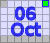 | Montebello | 1995(1) 1996(1) 1997(1) 2006(1) 2007(1) 2008(1) 2009(1) 2010(1) 2011(1) | The Climb of October! | 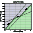 | ||
| 2 | 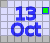 | 1995(10) 1997(7) 1998(5) 2008(3) | A finish to remember! | 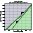 | |||
| 3 | 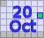 | Morgan Territory Road (S) | new! | East Bay standard! | 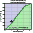 | ||
| 4 | 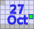 | Hwy 9 from Boulder Creek | new! | The other side! | 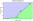 | ||
| 5 | Hwy 84 - West Alpine | new! | Let's get epic! | 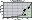 | |||
| 6 | Soda Springs | 1997(5) 1998(3) 2009(4) | Most continuous climbing of any Bay Area road! | 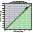 | |||
| 7 | new! | The dirt classic! (self-ride) | 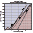 | ||||
| 8 | 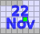 | Mt Hamilton | 1995(8) 1996(9) 1997(9) 1998(1) 1998(7) 2006(7) 2007(9) 2008(9) 2009(9) 2010(9) 2011(9) | It's time to earn your supper! | 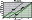 |
Sorry, folks! Our insurance requires all riders wear helmets during the climb, and we follow the USA Cycling rule against ear buds or other head phones. Rock to tunes before the climb, perhaps, but we need riders to pay attention to what's happening during the climb...
Each week, registration will open an hour before the listed time, closing 15 minutes before. voluntary donation, volunteers get 2 weeks free, under 18 years old are free, coordinators are free! Waivers available at registration. Two free entries if you volunteer.
All fees above direct expeneses are divided between the LiveStrong Foundation or the Peninsula Open Space Trust, two charities each doing excellent work.
We need time to get ready for this week's climb, so unfortunately we can accept no further riders this week!
Then, if you can, you'll want to print and fill out the PDF release form before the event.
Coordinators are what make Low-Key tick! Coordinators check here for useful notes on making the day a typical Low-Key success story!
| 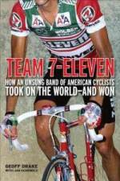 |
| 7-Eleven: Took on the World and Won, by Low-Key regular Geoff Drake!!! |
Volunteers are what make the Low-Key series work! Here's a list of volunteers so far. It's a great chance to give back to other rider. We always need more volunteers, but especially can use them for week 1. Volunteers get two free, transferrable climbing credits, and may have volunteer weeks credited with an average score from climbs ridden (see rules). Sign up using our new volunteer form!
This year, for the first time, we have two optional "self-rides". For these weeks there's no coordinator, no Low-Key volunteers, no donations, no bananas. Since Low-Key won't be there, it's up to you to judge conditions and the safety of the climb (there's no problem skipping these climbs and still getting your 4 weeks). When done, submit your recorded time (recorded with a stopwatch or lap timer, not by Strava, which is too approximate), or the URL of a Strava activity from which we can determine your time. Feel free to climb whenever you wish during the designated Saturday, solo or in a small group (less than 20 riders). There is no organized event, so please show respect for all other users of the road or trail. If you need to come to a complete stop to yield right of way, let us know for score adjustment: nobody should feel the need to take undue risks or incourtesies due to this series, and any reports of irresponsible behavior, on or off the bike, will result in scores being disqualified.
An email list is our primary communications channel: http://sports.groups.yahoo.com/group/lkhc.
We're also have a Low-Key group on Facebook It's the place to be for facebookie type stuff.
Detailed scoring information is available for those whoy want to know the nitty-gritty!
Rating of the climbs calculated using the special Low-Key Hillclimbs rating formula are available here!
Low-Key is all about a group of friends riding up a hill together. It's like any other informal group ride, except we time you to the top and report the results on our web site. But we have no road closures, no lead vehicle, no follow vehicle. We are traffic, sharing the roads with other traffic, following the laws and courtesy which applies to traffic. Think of it as a human-assisted Strava. We're each responsible for our own actions out there, on and off the bike, both as users of the road as as courteous visitors to the neighborhoods we pass through. "Ceci n'est pas un race".
Email Dan Connelly